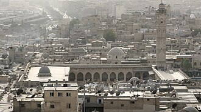

Apresentação
La Grande Mosquée d'Alep ou Mosquée omeyyade d'Alep est la plus grande et la plus ancienne mosquée de la ville d'Alep dans le nord de la Syrie, commande du calife al-Walid Ier en 715. Elle est située dans la vieille ville. La mosquée est censée conserver les restes du père de Jean le Baptiste, Zacharie qui est mentionné dans le Coran comme étant un prophète de l'islam.
جَامِعُ حَلَب الكَبير أو الجامع الأموي في حلب أو جامع بني أمية الكبير في حلب هو أحد أكبر وأقدم المساجد في مدينة حلب السورية، حيث يقع المسجد في حي الجلوم في المدينة القديمة من حلب، التي أدرجت على قائمة مواقع التراث العالمي عام 1986، حيث أصبح الجامع جزءاً من التراث العالمي، وهو يقع بالقرب من سوق المدينة. كما يُعرف الجامع أيضاً بوجود ما بقي من جسد النبي زكريا والد النبي يحيى. يقوم الجامع اليوم على مساحة من الأرض يبلغ طولها 105 أمتار من الشرق إلى الغرب، ويبلغ عرضه نحو 77.75 متر من الجنوب إلى الشمال وهو يشبه إلى حد كبير في مخططه وطرازه الجامع الأموي الكبير بدمشق. كما وبني المسجد في القرن الثامن الميلادي، إلا أن الشكل الحالي يعود إلى القرن الحادي عشر الميلادي حتى القرن الرابع عشر الميلادي، كما وبنيت المئذنة في عام 1090 ميلادي، ودمرت في نيسان من العام 2013 نتيجة للمعارك التي اندلعت هناك في أحداث الأزمة السورية.
The Great Mosque of Aleppo, also known as the Great Umayyad Mosque of Aleppo, is the largest and one of the oldest mosques in the city of Aleppo, Syria, first built under the Umayyad Caliphate. The mosque is located in the al-Jalloum district of the Ancient City of Aleppo, a World Heritage Site, near the entrance to al-Madina Souq. The mosque was purportedly home to the remains of Zechariah, the father of John the Baptist. It was built in the beginning of the 8th century CE during the reign of the Umayyad caliph Sulayman, but the current building dates from the 11th through 14th centuries.
Halep Ulu Cami ya da Halep Emevi Camii, Kuzey Suriye'nin Halep şehrindeki en büyük ve en eski camilerinden biridir. El-Medine Sûk (çarşısı) girişine yakın, Dünya Mirası listesinde olan Halep Antik Şehri'n el-Callum mıntıkasındadır. Caminin içinde Yahya'nın babası olan Zekeriya'nın türbesi mevcuttur. Cami 8. yy.'ın başında inşa edilmiş; ancak şimdiki bina 11. ila 14. yy.'a dayanmaktadır. Minare 1090 yılında inşa edilmiş, Nisan 2013'te Suriye İç Savaşı çatışmaları esnasında içine yerleştirilen mühimmattan veya bir tank topundan dolayı patlayıp yıkılmıştır. 2017 yılından bu yana restorasyon çalışmaları devam etmektedir.
Masjid Agung Aleppo atau Masjid Umayyah dari Aleppo adalah masjid terbesar di kota Aleppo, Suriah. Masjid ini terletak di distrik al-Jalloum kota tua Aleppo. Masjid ini konon rumah bagi sisa-sisa Zakharia, ayah dari Nabi Yahya. Masjid ini dibangun pada awal abad ke-8. Namun, pembangunan saat ini tanggal kembali ke 11 sampai abad ke-14. Sebuah menara masjid dibangun pada 1090 dan dihancurkan selama pertempuran saat Perang saudara Suriah pada tanggal 24 April 2013.
Die Umayyaden-Moschee oder Omajjadenmoschee von Aleppo ist eine syrische Freitagsmoschee, die auf den Umayyaden-Kalifen al-Walid I. oder Sulaiman zurückgeht. Um das Jahr 715 als zweite Moschee der Stadt errichtet ist sie etwa zehn Jahre jünger als die ungleich berühmtere Umayyaden-Moschee von Damaskus.
La Gran Mezquita de Alepo o Mezquita Omeya de Alepo es la mezquita más importante (aljama) en Alepo (Siria), construida durante la época de los Omeyas.
La moschea degli Omayyadi di Aleppo (in arabo الجامع الأموي ﺑﺤﻠﺐ?, al-Jāmiʿ al-Umawiyyī bi-Ḥalab, detta anche grande moschea d'Aleppo è la più grande e la più antica moschea della città di Aleppo, nel nord della Siria. Si trova nel quartiere al-Jallūm dell'antica città di Aleppo, patrimonio dell'umanità, vicino all'ingresso di al-Madīna Sūq. La moschea viene additata come luogo di conservazione dei resti di Zaccaria, il padre di Giovanni Battista, entrambi venerati nell'islam e nel cristianesimo. È stata costruita all'inizio dell'VIII secolo d.C. per volere del Califfo omayyade al-Walīd I. Tuttavia, l'attuale edificio risale all'XI secolo. Il minareto fu costruito nel 1090 e fu distrutto durante i combattimenti nella guerra civile siriana nell'aprile 2013.
A Grande Mesquita de Alepo ou a Mesquita Omíada de Alepo é a maior e mais antiga mesquita da cidade de Alepo no norte da Síria. A presente mesquita data do século XIII, no período mameluco, apenas o minarete seljúcida é de 1090. O minarete porém foi destruído durante os combates em 24 de abril de 2013.
De Grote moskee van Aleppo of de Al-Djami' al-Kabir is een moskee in de Syrische stad Aleppo. De moskee werd gebouwd tussen 710 en 715 door kalief Walid I van de Omajjaden. In 1169 brandde de moskee volledig af en deze werd later door Saladin opnieuw gebouwd.
アレッポの大モスク は、アレッポのウマイヤ・モスク とも称されるシリアの都市アレッポにある最大かつ最古のモスクの1つである。世界遺産である古代都市アレッポのアル＝ジャッルーム (al-Jalloum) 地区にあるアル＝マディーナ・スーク の入口近くに位置する。モスクには洗礼者ヨハネの父ザカリアの遺骸が残ると伝えられ、ジャミア・ザカリーエ とも称される。8世紀初頭に建立されたが、現在の建造物は11世紀から14世紀に始まる。ミナレットは1090年に建てられ、2013年4月、シリア内戦の戦闘のなかで破壊された。
अलेप्पो की महान मस्जिद; या अलेप्पो की उमय्याद मस्जिद जम्मू बनी उमायाह बि-हलाब सबसे बड़ी और शहर में सबसे पुरानी मस्जिदों में से एक है।, सीरिया, अलेप्पो शहर में अल-मदिना सूक के प्रवेश द्वार के निकट है। मस्जिद कथित तौर पर जॉन बपतिस्मा देने वाले पिता जकर्याह के घर के अवशेषों पर है।. यह 8 वीं शताब्दी की शुरुआत में उमय्यद शासकों द्वारा बनायी गयी थी हालांकि, वर्तमान इमारत 11 वीं से 14 वीं शताब्दियों तक की है और मीनार का निर्माण 1090 में किया गया था, लेकिन अप्रैल 2013 में सीरियाई गृहयुद्ध में लड़ाई के दौरान मस्जिद को नष्ट कर दिया गया था।
Великая мечеть Алеппо или Мечеть Омейядов Алеппо является крупнейшей и старейшей мечетью города Алеппо в Сирии. В мечети XIII века периода мамлюков только сельджукскому минарету 1090 лет. Она расположена в «районе аль-Джаллум» старый город, внесенный в список Всемирного наследия ЮНЕСКО, недалеко от входа на рынок Аль-Мадина. Предположительно, здесь находится могила Захарии, отца Иоанна Крестителя, которые почитаются как в христианстве, так и в исламе. Мечеть была построена в начале VIII века нашей эры. Однако нынешнее здание датируется XI–XIV веками. Минарет мечети был построен в 1090 году и был разрушен во время боевых действий в ходе гражданской войны в Сирии в апреле 2013 года.
มัสยิดใหญ่แห่งอะเลปโป เป็นมัสยิดที่ใหญ่ที่สุดและหนึ่งในมัสยิดที่เก่าแก่ที่สุดในนครอะเลปโป ประเทศซีเรีย ตั้งอยู่ในอำเภอ al-Jalloum ของเมืองโบราณอะเลปโป แหล่งมรดกโลกใกล้กับทางเข้าซูกุลมะดีนะฮ์ มีการอ้างว่ามัสยิดนี้เป็นที่เก็บศพของเศคาริยาห์ บิดาของยอห์นผู้ให้บัพติศมา ซึ่งทั้งสองคนได้รับการนับถือทั้งในศาสนาอิสลาม และศาสนาคริสต์ มัสยิดนี้สร้างขึ้นในช่วงต้นคริสต์ศตวรรษที่ 8 แต่อาคารปัจจุบันสืบไปได้ถึงคริสต์ศตวรรษที่ 11 ถึง 14 หออะษานในมัสยิดสร้างขึ้นใน ค.ศ. 1090 และถูกทำลายในระหว่างสงครามกลางเมืองซีเรียในเดือนเมษายน ค.ศ. 2013
Marea Moschee din Alep este o moschee din orașul Alep, Siria. Aceasta este cea mai mare moschee din oraș și una dintre cele mai vechi din țară. Este un loc de pelerinaj important deoarece aici se află mormântul lui Zaharia, tatăl lui Ioan Botezătorul, ambii considerați profeți în religia islamică.
No mapa
Documentos e ligações
- Wikipédia — Français
- Wikipédia — العربية
- Wikipédia — English
- Wikipédia — Türkçe
- Wikipédia — Bahasa Indonesia
- Wikipédia — اردو
- Wikipédia — Deutsch
- Wikipédia — Español
- Wikipédia — Italiano
- Wikipédia — Português
- Wikipédia — Nederlands
- Wikipédia — 中文
- Wikipédia — 日本語
- Wikipédia — 한국어
- Wikipédia — हिन्दी
- Wikipédia — Русский
- Wikipédia — ไทย
- Wikipédia — Română
- Wikidata — Q1481968
Dados: Wikidata (CC0), atualizados de 3 em 3 meses. O ano é a data de construção mais antiga conhecida do edifício: para um edifício que se tornou mesquita mais tarde (como Santa Sofia), é a do edifício original. Fotos: Wikimedia Commons, autor e licença na página de cada foto.